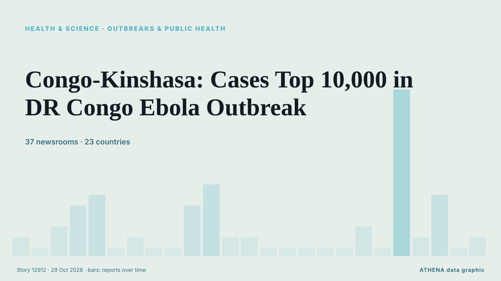

Congo-Kinshasa: Cases Top 10,000 in DR Congo Ebola Outbreak

The Democratic Republic of Congo is battling its deadliest outbreak of Ebola, caused by a rare strain with no approved treatment. из CBC News
Независимые источники: 37 изданий в 23 странах, с 17 окт.; первым сообщил CBC News; освещение идёт на спад. ATHENA оценивает риск как высокий (6.3/10), прежде всего из-за тяжести описываемого ущерба и географического и отраслевого охвата. Уверенность — 93 % (высокая); подтверждают независимые источники: 37 изданий, средняя надёжность источников — 76 %.
Почему это важно: События в здравоохранении и науке могут менять риски для общественного здоровья, приоритеты исследований и регулирование.
Что изменилось: 2 новых сообщений от 2 редакций за 24 часа до 29 окт..
Первый заголовок: What to know about the Ebola outbreak that has spread from Congo to 4 other countries
Заголовки приводятся на английском языке, как они были опубликованы.
Коротко в цифрах
Отобрано, оценено и написано по опубликованной методологии ATHENA. Ни один редактор не вмешивается в отдельные события. Как это создаётся ›
| 17 Oct 08:00 UTC | 1 |
|---|---|
| 17 Oct 20:00 UTC | 0 |
| 18 Oct 08:00 UTC | 2 |
| 18 Oct 20:00 UTC | 4 |
| 19 Oct 08:00 UTC | 5 |
| 19 Oct 20:00 UTC | 0 |
| 20 Oct 08:00 UTC | 1 |
| 20 Oct 20:00 UTC | 0 |
| 21 Oct 08:00 UTC | 0 |
| 21 Oct 20:00 UTC | 4 |
| 22 Oct 08:00 UTC | 6 |
| 22 Oct 20:00 UTC | 1 |
| 23 Oct 08:00 UTC | 1 |
| 23 Oct 20:00 UTC | 0 |
| 24 Oct 08:00 UTC | 0 |
| 24 Oct 20:00 UTC | 0 |
| 25 Oct 08:00 UTC | 0 |
| 25 Oct 20:00 UTC | 0 |
| 26 Oct 08:00 UTC | 2 |
| 26 Oct 20:00 UTC | 0 |
| 27 Oct 08:00 UTC | 15 |
| 27 Oct 20:00 UTC | 1 |
| 28 Oct 08:00 UTC | 5 |
| 28 Oct 20:00 UTC | 0 |
| 29 Oct 08:00 UTC | 1 |
| 19 Oct 15:50 UTC | 4.9 |
|---|---|
| 28 Oct 06:38 UTC | 6.4 |
| 29 Oct 13:52 UTC | 6.3 |
Откуда эти цифры
Значимость
Риск
Уверенность
Освещение — кто сообщил и когда
заголовок в оригинале · открывает источник- CBC News · Канада · Canada1 in 4 Ebola deaths are children in Democratic Republic of Congo's worst outbreak
- Asharq Al-Awsat (English) · Саудовская Аравия · Saudi ArabiaCongo Confirms Ebola Outbreak Spreads to Eighth Province
- The Independent · Великобритания · United KingdomFast-moving Ebola outbreak spreads to another Congo province
- ABC News (International) · Соединенные Штаты · United StatesCongo’s fast-moving Ebola outbreak spreads to eighth province
- Mainichi (English) · Япония · JapanCongo's fast-moving Ebola outbreak spreads to eighth province
- AllAfrica · AFRKenya: Kenya Cases Rise to 8, Spreads to 8th Congo Province
- Africanews (English) · AFRDR Congo: Ebola outbreak deepens mental health crisis amid stigma and conflict
- Africanews (English) · AFRKenya confirms eighth Ebola case as regional outbreak spreads
- CGTN (World) · Китай · ChinaEbola and conflict threaten education for DRC children
- TASS (English) · Россия · RussiaEbola death toll in DR Congo surpasses 4,500 — Health Ministry
- Medical Xpress · Великобритания · United KingdomCongo's fast-moving Ebola outbreak spreads to eighth province
- The Rio Times · Бразилия · BrazilDR Congo Ebola Province Caps Burials at 20
- Africanews (English) · AFRDR Congo: $700m in Ebola aid unaccounted for as outbreak spreads
- Anadolu Agency (English) · Турция · TurkeyEbola transmission in DR Congo remains active: WHO
- CGTN (World) · Китай · ChinaCross-border spread heightens concerns of expanding Ebola outbreak
- Arab News · Саудовская Аравия · Saudi ArabiaWhat to know about the Ebola outbreak that has spread from Congo to 4 other countries
- Egypt Independent · Египет · EgyptEbola has spread from Congo to 4 other countries. A look at where things stand
- DW English · Германия · GermanyAfrica CDC calls crisis meeting as Ebola spreads
- Medical Xpress · Великобритания · United KingdomWhat to know about the Ebola outbreak that has spread from Congo to 4 other countries
- CGTN (World) · Китай · ChinaEbola outbreak rebounds in DR Congo: WHO
- UN News · Соединенные Штаты · United StatesDR Congo: Ebola responders under pressure as outbreak expands
- TASS (English) · Россия · RussiaNumber of Ebola infections in DR Congo surpasses 9,700
- Xinhua (English) — page reader · Китай · ChinaAfrica faces most geographically widespread Ebola outbreak on record as DR Congo cases near 10,000
- The New York Times (World) · Соединенные Штаты · United StatesHow Pastors Mobilize Communities in Congo’s Fight Against Ebola
- Colombia One · Колумбия · ColombiaIs Colombia Prepared for an Ebola Outbreak?
- TASS (English) · Россия · RussiaEbola death count in Congo tops 4,800 people
- Manchester Evening News · Великобритания · United KingdomEbola outbreak: Should we be worried in the UK as virus spreads across Africa?
- The Straits Times · Сингапур · SingaporeCongo's Ebola cases surpass 10,000 as fears grow of wider African spread
- Arab Times · Кувейт · KuwaitCongo’s Ebola outbreak tops 10,000 cases as authorities race to slow spread in African nations
- CNA (Channel NewsAsia) · Сингапур · SingaporeCongo's Ebola cases surpass 10,000 as fears grow of wider African spread
- Xinhua (English) — page reader · Китай · ChinaDR Congo Ebola cases top 10,000 as outbreak spreads across Africa
- The Korea Times · Республика Корея · South KoreaCongo's Ebola outbreak tops 10,000 cases as authorities race to slow the spread in African countries
- Al Jazeera English · Катар · QatarEbola cases in DR Congo surpass 10,000 in fastest-growing outbreak
- Free Malaysia Today · Малайзия · MalaysiaDR Congo’s Ebola cases surpass 10,000 as fears grow of wider African spread
- Jamaica Observer · Ямайка · JamaicaAfrica Ebola outbreak passes 10,000 cases — DR Congo health authorities
- Channels TV · Нигерия · NigeriaAfrica Ebola Outbreak Passes 10,000 Cases, Mostly In DR Congo
- Vanguard · Нигерия · NigeriaAfrica Ebola outbreak passes 10,000 cases, mostly in DR Congo
- CBC News · Канада · CanadaEbola cases top 10,000 in Democratic Republic of Congo, as countries race to stop spread
- Anadolu Agency (English) · Турция · TurkeyWeak contact tracing persists as Ebola cases surpass 10,000 in DR Congo
- RTÉ News · Ирландия · IrelandAfrica Ebola outbreak passes 10,000 confirmed cases